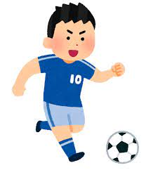
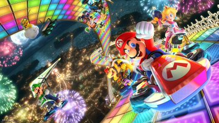

氏名
佐々木快生
趣味好きなこと
サッカー観戦

欧州には、ラリーガ、セリエＡ、Ｉリーグ、ブンデスリ―ガ、プレミア
リーグと呼ば
れる五つの代表的なリーグがあり、各リーグ
上位3チームを含んで、 一年規模で開催され
るUCL(チャンピオンズリーグ)と呼ば
れる大会がある。
マリオカート

アイテムボックスから出てくるアイテムを駆使し、一位を目指すゲーム幅広い世代に愛
されている。
がしかし、アメリカの情報サイト(BonusFinder)による
最もストレスが溜
まるゲームランキングでは、堂々の第一位を獲得している。